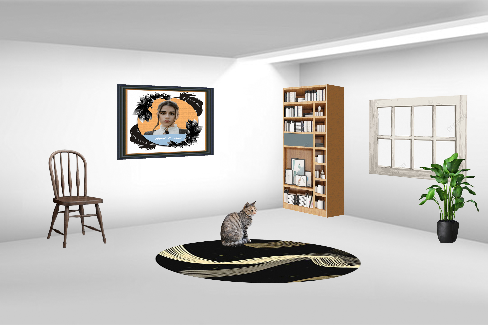

偶的個人介紹
嗨嘍！偶是一個大三生，最喜歡的事情是唱歌，還有創作跟思考，歡迎跟我交朋友。
歡迎來到偶的網站(ᕑᗢᓫ∗)˒

這是偶用 Illustrator 做的 2023 年兔年賀卡。

這是偶用 Photoshop 做的空間物品合成練習。
這是用樹酯板割出圖案，最後印出來的成品。

這是某一年母親節畫的康乃馨。

嗨嘍！偶是一個大三生，最喜歡的事情是唱歌，還有創作跟思考，歡迎跟我交朋友。
有事找偶，沒事也可以找偶ʕ•̀ ω • ʔ：
Email: d12370106@gm.tut.edu.tw